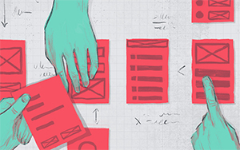

Architecture
Information Architecture is about connecting people to content in a way that is most understandable to them. It creates a hierarchy of content on a page and uses different elements such as navigation to add structure. It takes the different types of information into context and organizes it in a manner to make it easy to find content. It's essential, when trying to get new unique visitors.
Information Architecture is essential, when trying to increase page views and unique visitors.
Interaction Design deals with the specific interactions between users and a screen. Visual Design responds to the user goals supported in Interaction Design to communicate the brand using graphics, images, fonts, color, icons, and so on.
Interaction design also uses prototyping to define specific behaviors and functions for different components. For example; on a mobile app design, does a sign-in page “ease” in, fade in, or slide to the right? This kind of transition should be explored in an interactive concept so the final product is implemented as closely as possible to the designer’s intention.
Usability deals with leveraging data to determine the validity of design decisions. While in any given company there are people from different backgrounds speaking to the goals of the business or specific engineering constraints, it is the role of the UX designer to champion for the needs of a user and communicate any frustrations/pain points felt during the use of a product.
This data can be obtained in a variety of ways—from focus groups to surveys, from lab-based usability studies to one-on-one interviews and site visits, eye tracking, card sorts, A/B testing, telemetry, and so on.
Design
An important concept in UX design is the process by which users form experiences. When first encountering a product, a user forms a momentary impression—which evolves over time, typically as the product is used throughout a period. In this process, the user’s perception, action, motivation, and cognition integrate to form a memorable and coherent story: called “the user experience.” This process elicits emotional responses, which largely determine whether the experience will be considered positive or negative.
UX designers, or designers who are aware of the process of experience formation, seek to create and shape the factors influencing the process deliberately. To do this, a UX designer will consider the Why, What, and How of product use. The Why involves the users’ motivations for adopting a product, whether they relate to a task they wish to perform with it, or to values and views associated with the ownership and use of the product. The What addresses the things people can do with a product—its functionality. Finally, the How relates to the design of functionality in an accessible and aesthetically pleasant way. UX design starts from the Why, then determines the What and finally the How, in order to create products that users can form meaningful experiences with.
Prototyping
Prototyping is essential for resolving usability issues before launch. It can also reveal areas that need improvement. Once a draft of your product idea is in the hands of real users, you’ll finally see how they want to use the product. You can then go back and adjust your initial guesswork.
Prototypes have 4 main qualities:
- Representation: The actual form of the prototype, i.e., paper and mobile, or HTML and desktop.
- Precision: The fidelity of the prototype, meaning its level of detail, polish, and realism.
- Interactivity: The functionality open to the user, e.g., fully functional, partially functional, or view-only
- Evolution: The lifecycle of the prototype. Some are built quickly, tested, thrown away, and then replaced with an improved version (this is known as “rapid prototyping”). Others may be built and improved upon, ultimately evolving into the final product.
Usability
Usability replaced the outmoded label “user friendly” in the early 1990s. “Usability” has had trouble finding the definition we use now. Different approaches to what made a product “usable” splintered between looking at it with the view of the product in mind (i.e., the ergonomic design, such as a curved keyboard); looking at it from the point of view of the user (how much work and satisfaction/frustration he/she experiences using it); and the view of the user’s performance, which involves how easy the product is to use, if it’s to be used in the real world.
It’s important to analyze the users’ performance and concerns with a web design as early as possible. From there, we can apply a set of guidelines with a grain of salt; because they tend to be general, we need to adapt them to our specific area. Guidelines show a product’s features proven to improve usability. We can fine-tune design revisions according to these guidelines, as long as we look at all the dimensions. Sometimes, it might just involve tweaking a menu layout; or, it might involve looking much higher.
Using Best Practices Responsibly
Best practices, patterns, and templates provide the benefit of delivering a repeatable process in a fast and flexible manner. As companies incorporate user needs into their projects, the push will continue to find better, faster, and cheaper ways to incorporate good UX. Yet delivering a fast, cheap and positive experience means knowing not only how to apply the best practices of user experience, but also when to break the rules.
Read and learn about the current visual design trends. AIGA, DigitalArts, Smashing Magazine and Dribbble are great places to start. Pay attention to what’s driving the trend—is it just the next thing, or are there user experience lessons being distilled through the trend? Understanding design trends allows for faster assessment during the creative process, and can help steer products away from becoming the next “one of many”.
Take time to understand the platform specific interaction guidelines. I recommend starting with the The Human Interface Guidelines. They provide the baseline of knowledge around iOS development, and a deep understanding of the HIG allows for easier conversations with developers when it becomes necessary to break the standard.
Continually balance the advantages of a best practice, pattern or template with the value of a higher-touch solution. When considering the time or cost savings, also weigh the impact to users or longer-term impact to business value by not creating bespoke solutions.
Finally, think about the concept of engagement. One way of thinking about engagement is through the idea of flow. UX researcher Dana Chisnell explains flow as the ability to increase engagement and add depth to an experience through responsiveness, affordance and feedback, clear information architecture, matching challenges with skills and providing minimal distractions. She has a great article, Beyond Task Completion: Flow in Design, that is worth reading to learn more about the concepts. Ultimately, creating a positive experience is not about having best practices. It’s about putting those practices into the right hands.
If you have questions or concerns please submit them below at our COMMENTS section. We will respond any questions as soon as we are able.